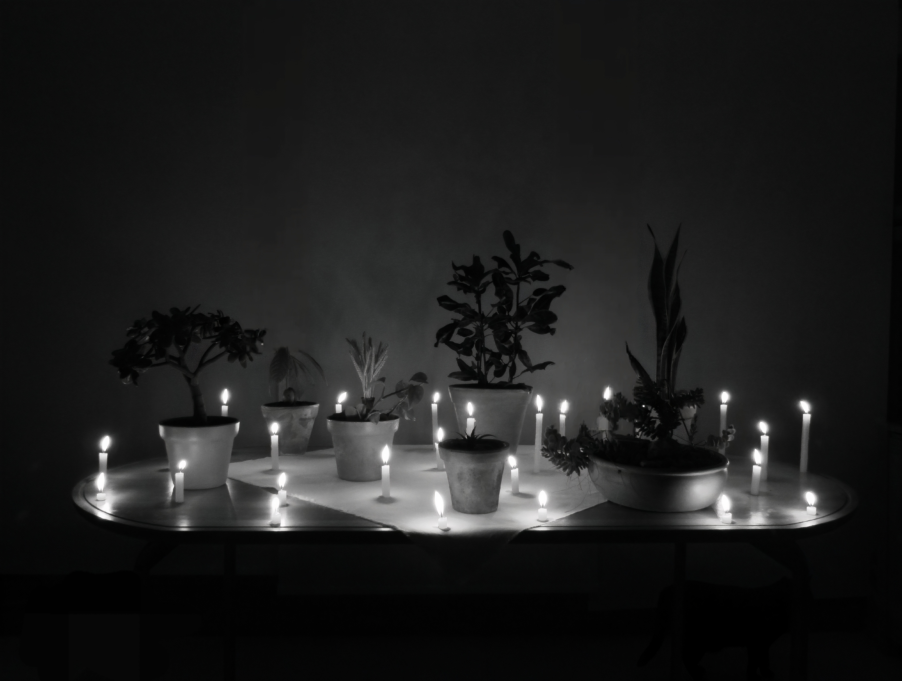
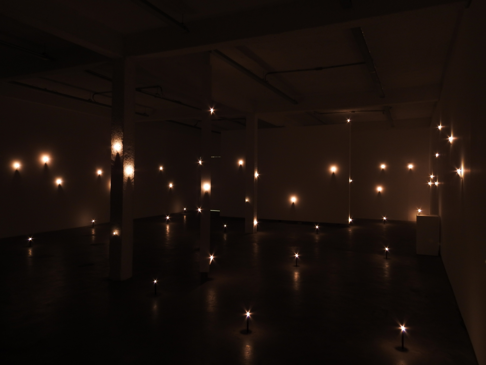
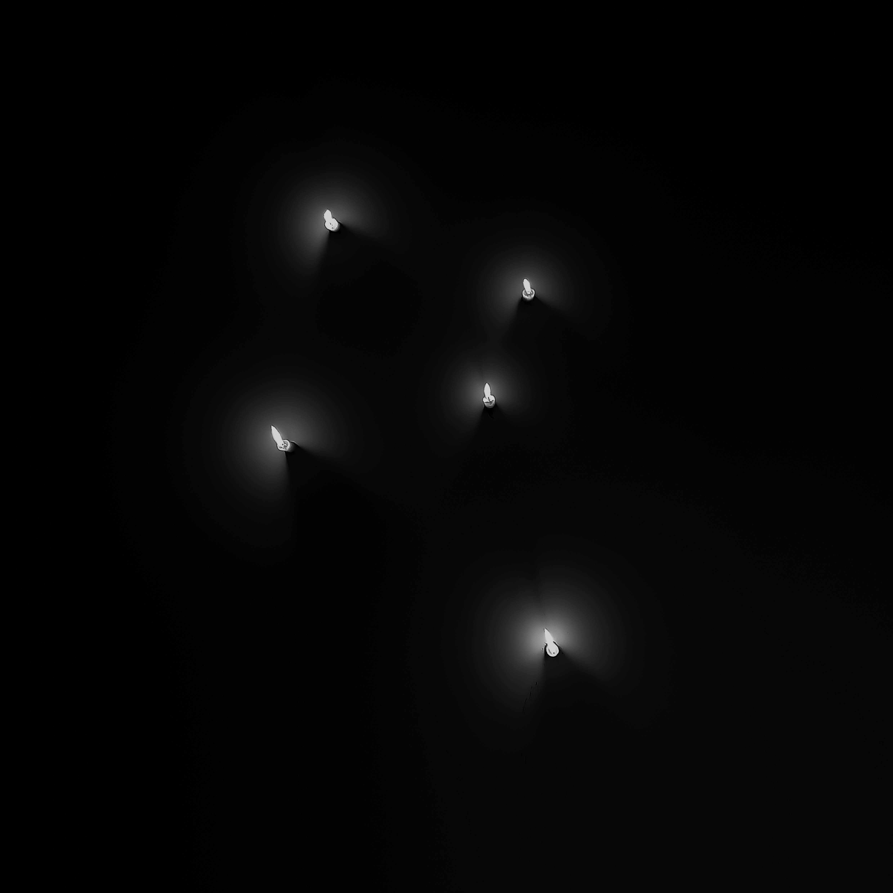
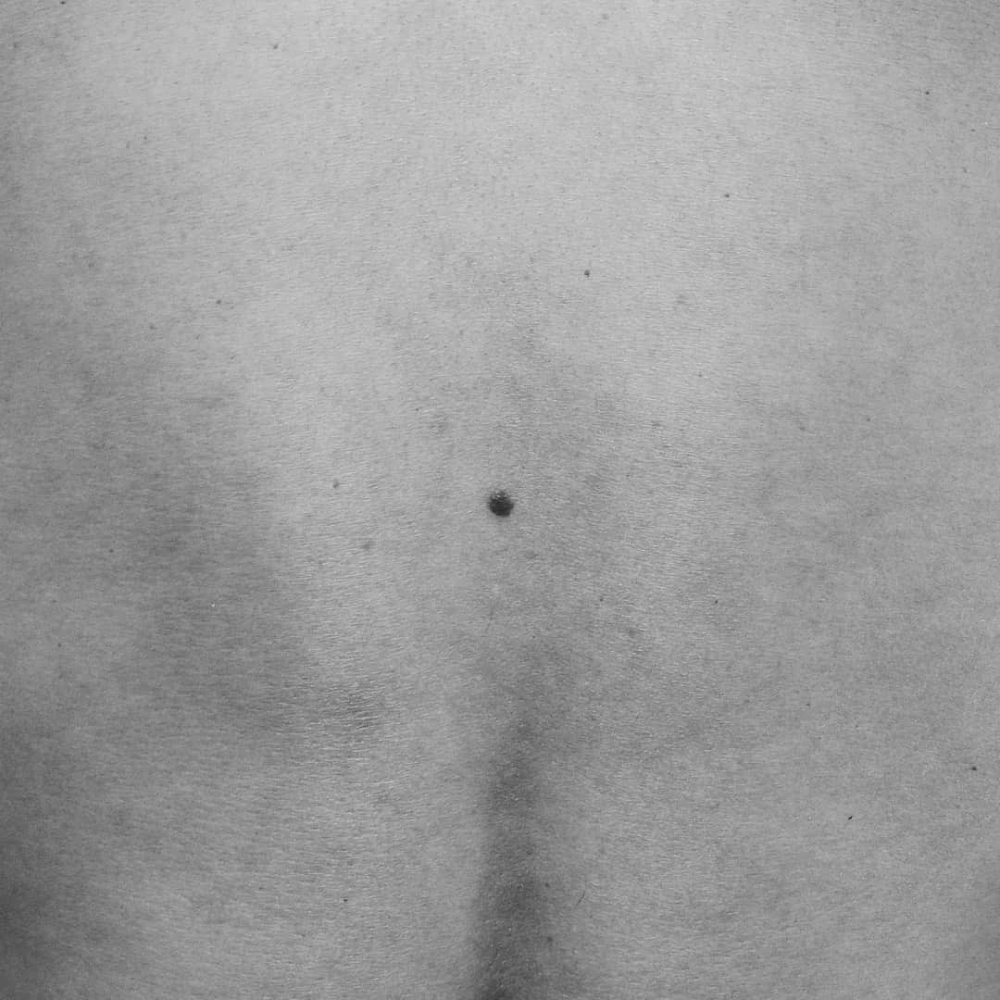

Sistema Para Observar Constelações em Tempos Nublados
São Paulo, Brasil
Propõe a construção de arranjos luminosos no espaço expositivo que simulam a lógica visual das estrelas e constelações. A partir de fontes simples — como velas, luminárias e reflexos de luz na água — o trabalho reorganiza pontos de luz no ambiente, criando sistemas artificiais de orientação e contemplação. O projeto desloca a experiência astronômica para um campo íntimo e acessível, transformando a impossibilidade de observar o céu em um exercício de recriação e percepção.





